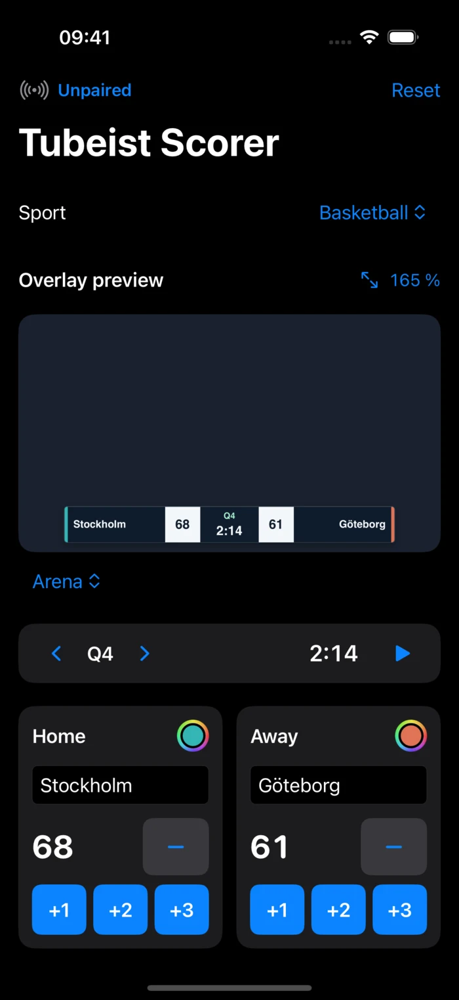
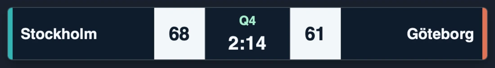

Live scoreboards
for Tubeist.
Keep score from the sideline on your iPhone or iPad. Scorer sends the scoreboard over Bluetooth to the iPhone running Tubeist.
iPhone and iPad · iOS or iPadOS 18 or later



21 sports. Controls that fit the match.
Run the game clock in basketball, track bases and outs in baseball, or follow the batting side and target in cricket. Scorer saves a match for each sport so you can come back to it when you switch.
Timed team sports
- Basketball
- 3×3 basketball
- Handball
- Floorball
- Soccer
- Futsal
- Ice hockey
- Field hockey
- American football
- Rugby union
- Netball
Court and racket sports
- Volleyball
- Beach volleyball
- Table tennis
- Badminton
- Tennis
- Squash
- Padel
- Pickleball
Bat and ball sports
- Baseball
- T20 cricket
Choose how the score looks.
Give each side a name and a colour. Choose from six scoreboard themes, then resize the overlay in the preview. The same graphic appears in Tubeist.
Connect two devices.
Open Scorer on the device keeping score and Tubeist 2.4.0 or later on the iPhone filming. Scoring and the local preview work offline.
Start receiving in Tubeist.
Open Settings → Overlays → Nearby Overlay and tap Start receiving.
Pair in Scorer.
Tap the Bluetooth control in the toolbar, enter the six-digit code from Tubeist, then choose the nearby iPhone.
Keep score.
Tap Done on both devices. The overlay updates in Tubeist as you score.